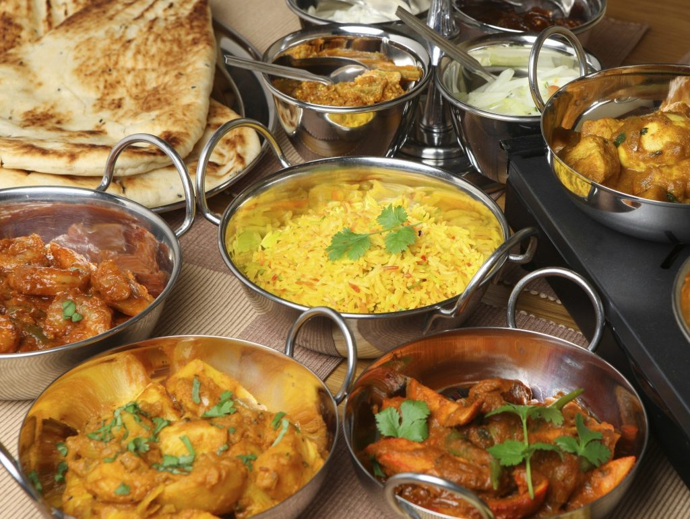

Food

Food Sources & Agriculture
Pakistan has a rich gastronomic culture. Food is prepared with love and is an existential part of everyday life. No event is complete without an extensive cuisine.
Pakistani cuisine has imbibed various local flavours and tastes and was refined by the royal kitchens of 16th century Mughal emperors.
Pakistan has a large variety of meat dishes compared to the rest of the sub-continent and most of those dishes have their roots in Central Asia, British and Middle Eastern cuisine.
Pakistani cooking uses spices, herbs and seasonings. Garlic, ginger, turmeric, red chilli and garam masala are used in most dishes, and home cooking regularly includes curry.
Pakistan's key food crops are wheat, rice, maize, oilseeds, and sugar.
Agriculture is not yet mechanically advanced in Pakistan so things like land preparation, growing, and harvesting are all done by hand.

Influences on Pakistan's Cultural Cuisine
Pakistani cuisine has Indian roots (heavy spices), Irani, Afghani, Persian, and Western influences.
Mughal Empire influence included herbs, spices, almonds and raisins.
An example of this is 'Shahi Tukra', a dessert made with sliced bread, milk, cream, sugar, and saffron.

Breakfast in Pakistan
A typical Pakistani breakfast called nashta usually consists of eggs, a slice of loaf bread or roti, parathas, tea or lassi, qeema (minced meat), fresh seasonal fruits, milk, honey, butter, jam, shami kebab or nuts.
Sometimes breakfast includes baked goods like bakhar khani and rusks.
During holidays and weekends, halwa poori and chickpeas are sometimes eaten.
A traditional Sunday breakfast might be 'Siri Paya', the head and feet of lamb/cow, or 'Nihari', a dish which is cooked overnight to get the meat extremely tender.

Lunch in Pakistan
A typical Pakistani lunch consists of meat curry or shorba along with rice or a pile of roti or naan.
Daal chawal is among the most commonly taken dishes at lunch.
Chicken dishes like chicken karahi are also popular.
Popular lunch dishes may include aloo gosht (meat and potato curry) or any vegetable with mutton.
People who live near the main rivers also eat fish for lunch, which is sometimes cooked in the tandoori style.

Dinner in Pakistan
Lentils are also a dinnertime staple.
These are served with roti or naan along with yoghurt, pickle and salad.
The dinner may sometimes be followed by fresh fruit, or on festive occasions, traditional desserts.
Dinner is considered the main meal of the day as the whole family gathers for the occasion.
Food which requires more preparation and are more savoury (such as biryani, nihari, pulao, kofte, kebabs, qeema, korma) are prepared.

Pakistani Desserts
Popular desserts include Peshawari ice cream, sheer khurma, kulfi, falooda, kheer, feerni, zarda, shahi tukray and rabri.
Mithai are consumed on various festive occasions in Pakistan.
Some of the most popular are gulab jamun, barfi, ras malai, kalakand, jalebi and panjiri.
Pakistani desserts also include a long list of halvah, such as Multani, hubshee, and sohan halvah.
Heer made of roasted seviyan (vermicelli) instead of rice is popular during Eid-ul-Fitr.
Gajraila is a sweet dish made from grated carrots, boiled in milk, sugar, cream and green cardamom, topped with nuts and dried fruit.

Street Food & Snacks
Roadside food stalls often sell just lentils and tandoori rotis, or masala tews with chapatis.
Pakoras are fried vegetable fritters that originated from India and are popular on the subcontinent.
The recipe includes a mix of onions, potatoes, and other vegetables, finely sliced and mixed with gram flour, chili flakes, water, lemon juice, and chili powder.
It is usually enjoyed with a glass of masala chai.
Gol gappay, also known as pani puri, is kind of like a crispy crepe shell that is hollowed out to make a round shape and filled with imli pani or flavoured water, chaat masala, tamarind chutney, onions, and chili.